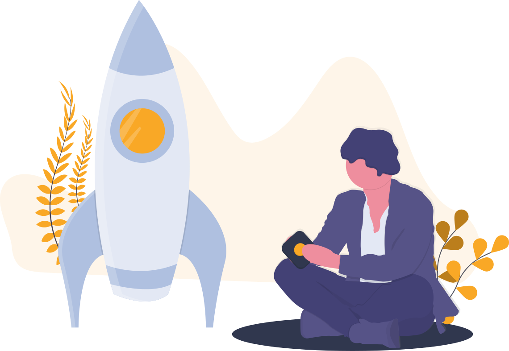

NEW

The new True Bot has been built with new cool ideas and innovations. The main focus of the project, now is to relaunch the service with a lot of new features and integrations.
FAST
With the new technologies, a more reliable and fast hosting platform, we've improved True Bot speed and response time, in addition to the User Experience.
SECURE
True bot is safe from hacker's attacks. The code has a lot of integrations for managing the security standards. The team is always on guard to control the code integrity and security before publishing any new update.
🧡NEW OPEN SOURCE

We have finally decided to make the project open source (OS). The OS
community is
one of the best
places we've ever found and we think that for a best maintainment and to get a better
security,
we need
more eyes on the project. Than, after having made some researches on the internet about open source
projects, we have found out that there so many advantages for OS projects.
So, why
not?